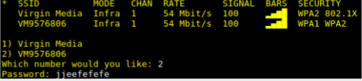

Instructions

Getting started
Get your SHEP and plug in an HDMI cable, connecting it to a monitor or screen. Then plug your keyboard into SHEP’s USB ports. After this you may power it on. You will see a black screen, wait for it to load and you will be given Wi-Fi options. Simply enter the number of your network and it’s password.
After this it will ask you to fill out information about you. This is so SHEP knows you. After set up, you no longer need to use the keyboard or HDMI – unless you change your Wi-Fi.
Using SHEP
The LEDs will flash about to show SHEP is thinking. When the LEDs stop flashing and hold still, SHEP is listening to what you say. Always start your sentence with “robot”. “Robot what is your name” “Robot how are you feeling” SHEP will ignore you if you either don’t say “robot”, or speak when the LEDs are not holding steady
When SHEP does not understand, the AI will prompt you saying why it does not understand. SHEP uses 3 keywords or key-phrases to understand. A trigger word which defines what type of sentence it is. “Who” “What” “how” would all signify questions. Subject words are the key point of the sentence such as “Winston Churchill” in the question “who is Winston Churchill”.
The final word is a word which identifies the information for the subject. “who is Alan Turing” where “is” is the command. “how old is Alan Turing” where “old” is the command. In the data it would learn who he is, his age and any other key information. Along the way SHEP learns words with similar meaning without the user needing to teach them.
If all the words are added, but SHEP does not have them in it’s memory, SHEP will use the Internet to find an answer. SHEP will either find one, or ask you how to respond. This is where you can teach SHEP. SHEP saves all answers in it’s data – so if you are unhappy with the saved reply, you can change it.
Editing
To edit SHEP’s data you can say “robot edit” SHEP will ask you which sentence and what to replace it with. You do not have to say “robot” at the beginning of these.
Actions
If you want SHEP to do more than learn how to reply, when adding or editing a sentence SHEP. SHEP will ask how should it respond, and you can say “action” or “an action”. You can then say what the file is called and SHEP will add it. The files are python files, and can be added through a USB.
On your USB flash drive, create a folder called “AI” then inside that create another folder called “actions”. This must be directly accessible “Devicename/AI/actions” To transfer data, put your actions in the actions folder, plug your USB device into SHEP and say “robot add action”. SHEP will automatically read and transfer your files.